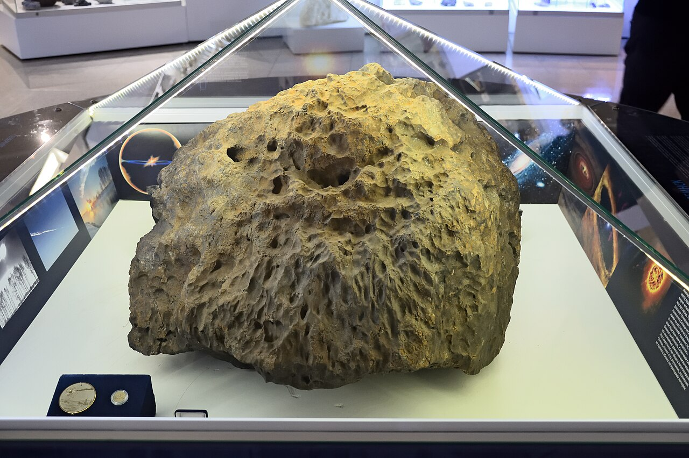

Зал природыФрагмент метеорита «Челябинск»
Космический гость весом более 600 килограммов — самый крупный фрагмент, извлечённый со дна озера Чебаркуль и доставленный в музей 17 октября 2013 года. Витрину в центре зала при необходимости можно открыть, чтобы рассмотреть рельеф камня.
Под стеклянным колпаком · центр зала